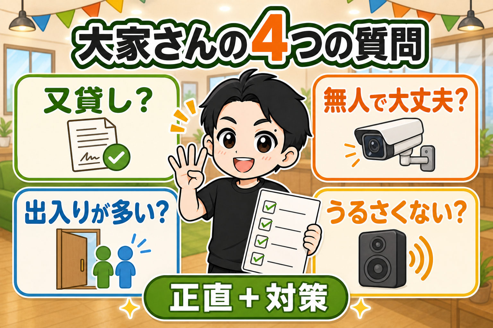
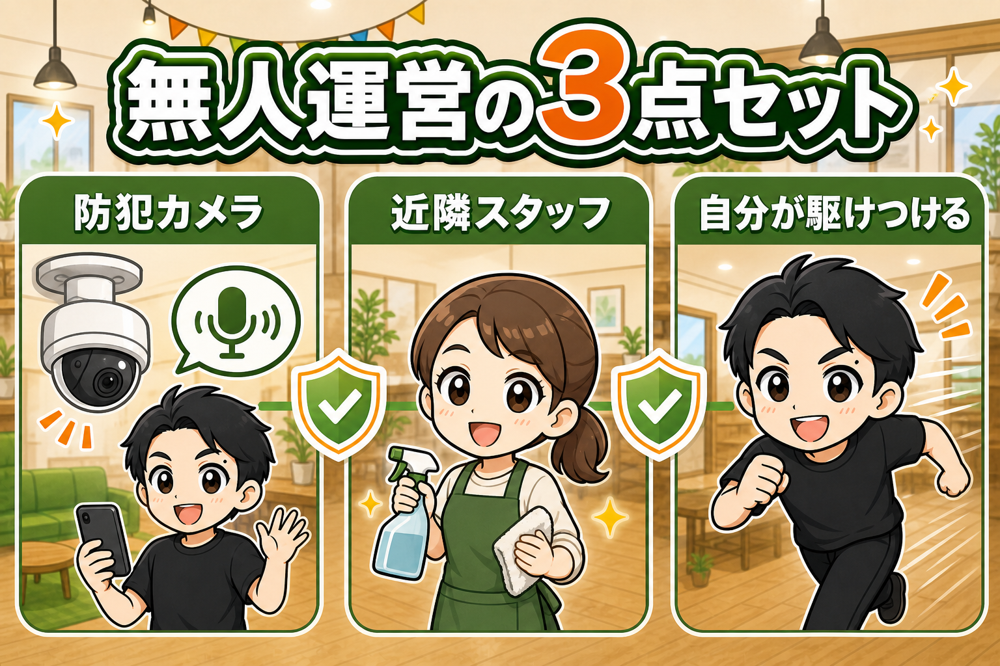
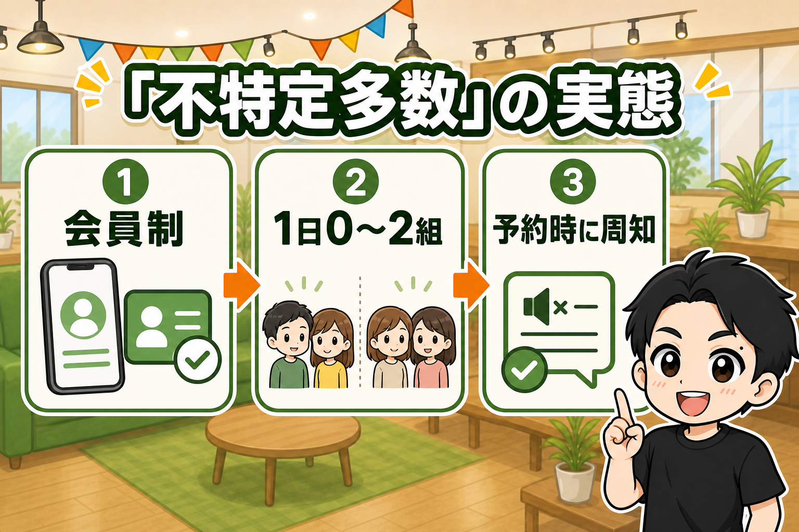
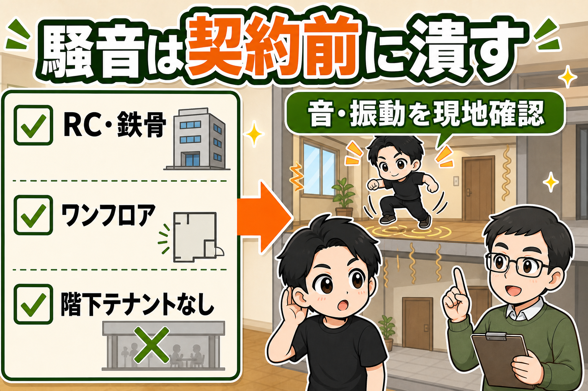
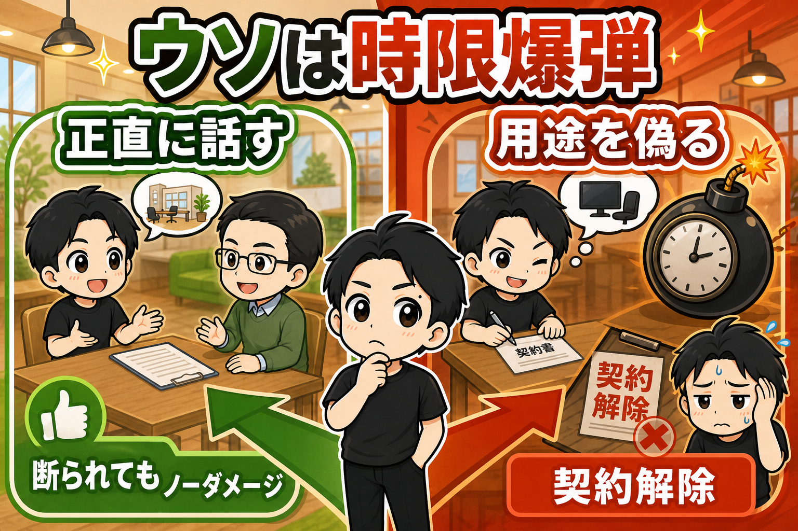

レンタルスペースの物件を問い合わせたとき、聞かれる質問は、だいたい4つです。
ぼくも最初の申込みのときは、不動産の素人でした。
不動産屋さんから、大家さんから、何を聞かれるんだろう。
ビクビクしていたのを覚えています。
でも23部屋契約してきて、わかりました。
聞かれることは毎回ほぼ同じです。
今日はその4つの質問と、答え方をセットで書きます。

質問①「又貸しじゃないの?」
レンタルスペースは、賃貸の又貸し（転貸）になるんじゃないか。
まず聞かれるのがこれです。
答えは、契約の形にあります。
契約書には、業種欄に「レンタルスペース」「ダンスレンタルスタジオ」など、人に貸すことが前提の内容を記載してもらって契約します。
貸す側が、その使われ方を承知の上で貸す。
つまり、結果的に許可を得ている状態になります。
言葉の定義で議論する場面ではありません。
先方として、業種が「あり」なのか「なし」なのか、それだけです。
そもそもレンタルスペースの問い合わせは不動産屋さんに大量に来ているので、ダメな物件は問い合わせの時点で断られます。
土俵に乗った物件と、正直に話をしましょう。
質問②「無人で大丈夫なの?」
レンタルスペースは、人がいない店舗です。
大家さんの気持ちになったら、心配なのも当然ですよね。
ここは隠さず「無人での運営になります」と伝えます。
そのうえで、対策を3つ添えます。

防犯カメラをつけます。
リアルタイムで室内を確認できます。
録画も残るので、何かあっても対応できます。
しかも今のカメラは双方向で通話ができます。
有事の際は、カメラからお客様に話しかけて、状況を確認しながら対応できます。
近隣に担当スタッフがいます。
掃除の外注さんを近隣で雇うので、何かあれば現地に駆けつけられます。
掃除の外注さんを募集する際も「緊急対応」をしてもらうことがある、と伝えます。
そして、実際に緊急対応をしてもらったときは、別途報酬をお支払いします。
自分が駆けつけます。
駆けつけられる場所に住んでいるなら、これが一番効きます。
「何かあれば私がすぐに対応できます」。
実際、何かあったら対応するべきなので、これは営業トークではありません。
質問③「不特定多数の出入り」があるんでしょ?
見ず知らずの人が、1日に何回も出入りするんじゃないか。
「不特定多数の出入り」という言葉が使われることが多いです。
そして、他の入居者に迷惑がかかるんじゃないか。
この質問の中身は2つです。
「素性のわからない人が来るのでは」と「頻繁に出入りがあって騒々しいのでは」。

素性については、こう答えます。
予約には電話番号とメールアドレスの登録が必須です。
インスタベースでもスペースマーケットでも、お客様はアカウントを作らないと予約できません。
つまり、連絡の取れる会員制です。
ポータルサイトでは、免許証などの本人確認をした人しか予約できない設定も出てきています。
どうしてもネックになる場合は、この設定を実施するのも手です。
頻繁な出入りについては、実態の数字を出します。
パーティースペースや撮影スタジオは、長時間でまとめて予約が入ります。
だから1日の組数は案外少なくて、0〜2組くらい。
不特定多数の、「多数」のイメージとは、だいぶ違います。
そして近隣迷惑には、運用で答えます。
「共用部では静かにお願いします、と予約時に毎回周知徹底します」。
実際に近隣迷惑があっては、長くスペースを営業することはできません。
なので、予約時のメッセージや室内のPOP掲示でしっかり対策をします。
質問④「うるさくならない?」
騒音は、一番こじれると怖い質問です。
ここは物件の構造の種類と、内見のときに現地確認で対応します。

まず、物件の構造の種類です。
鉄筋コンクリート(RC・SRC)や鉄骨の物件を選びます。
木造アパートのような、音が筒抜けの物件は最初から候補にしません。
鉄筋コンクリートや鉄骨であれば、そもそも防音性が高いのでリスクが軽減されます。
ただ、いくら鉄筋コンクリート・鉄骨であっても、建物の壁の厚さなどにより、状況は千差万別です。
最初の関門として考えてください。
そして内見のときに現地確認をします。
AnkerやJBLのような低音が効くBluetoothスピーカーを持っていきます。
利用の際、想定される音量で実際に音楽を流して、隣や廊下でどう聞こえるかを確かめます。
上下左右に他のテナントがいるなら、挨拶して確認まで行きます。
「入居を検討しています。音がご迷惑にならないか、確認させていただけないでしょうか」
不動産屋さんと一緒に行って、確認しましょう。
このときに隣接の入居者さんの様子も分かります。
とくにダンススタジオは、これを必ずやってください。
同行している不動産屋さんと手分けして、ジャンプや足音をならして振動も確かめます。
入居後に音漏れが発覚すると、クレームから即退去コースです。
契約前の1時間の確認が、その事故を消してくれます。
防音防振の工事はするのか？
検討するのは、ダンススタジオですが、結論、工事はしません。
防音防振の工事というのは、費用がとてもかかります。
小さな部屋でも数百万はかかります。
これではいつまでたっても回収できません。
さらに、防音防振の工事をしても、音漏れ・振動を完全に防ぐことはできません。
なんどか問い合わせたことがありますが、ほとんど変わらないこともザラだそうです。
なので、工事ではなく、まずはリスクの少ない物件を選ぶことが最重要です。
- 鉄骨・鉄筋コンクリート造
- ワンフロア・ワンテナント
- 階下にテナントがない（1階、地下、中2階）
このような物件を探し、前述のような現地確認をする。
これが正解です。
ひとつだけ、注意です
「レンタルスペースと言うと借りにくいから、『事務所です』と言って借りよう」
これだけは、絶対にやめてください。

賃貸借の借主には、契約で決まった用法に従って使う義務があります(民法616条が準用する594条1項)。
そして、貸主の承諾なく第三者に部屋を使用させると、貸主は契約を解除できます(民法612条)。
用途を偽って運営すると、契約解除→強制退去。
損害賠償の請求につながる可能性もあります。
無人で、不特定多数が出入りする商売です。
大家さんや近隣は、使われ方を必ず見ています。
正直に聞いて断られるのは、ノーダメージ。
ウソをついて始めるのは、時限爆弾です。
法令参照: e-Gov法令検索「民法」。個別の契約や法的判断は、専門家へご確認ください。
まとめ: 正直に伝えて、対策をセットで出す
聞かれる質問は4つ。
- 又貸しじゃないの? → 業種を明記した契約で、用途の許可を得る
- 無人で大丈夫? → カメラ・清掃スタッフ・駆けつけの3点セット
- 知らない人が出入りする? → 会員制と、1日0〜2組の実態
- うるさくならない? → 構造で選び、内見で現地確認
共通するコツは1つだけです。
懸念を隠さず正直に認めて、対策をセットで出す。
聞かれることが先にわかっていれば、ビクビクする必要はありません。
この4つを頭に入れて、まずは気になる物件に問い合わせてみてください。
▼もう1つの副業、AI社員だけのeBay輸出店の実録🐹
https://note.com/cham_ebay
▼ブログ(レンスペ×eBay、全記事まとめ)
https://rental-space.net